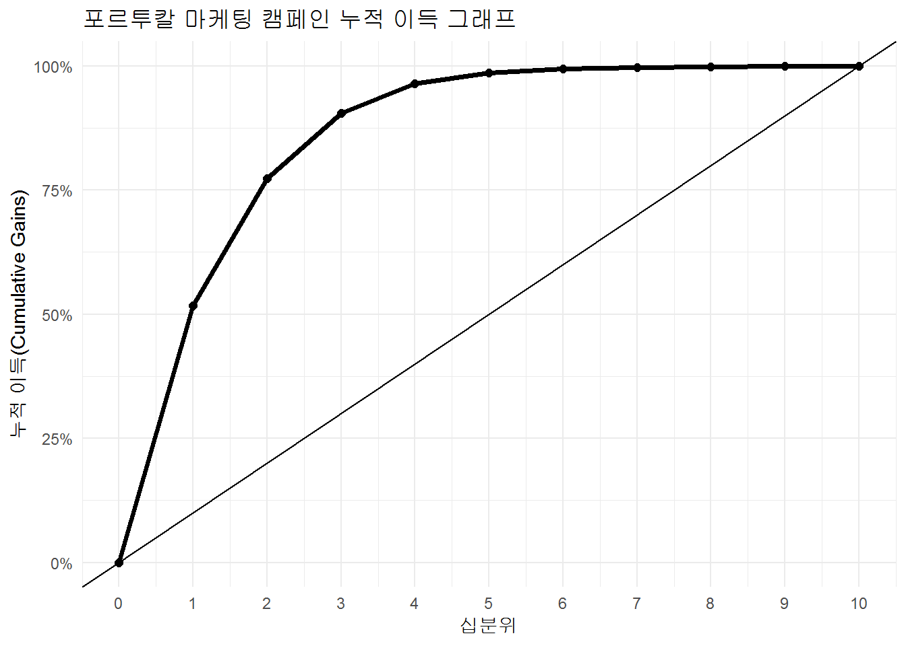
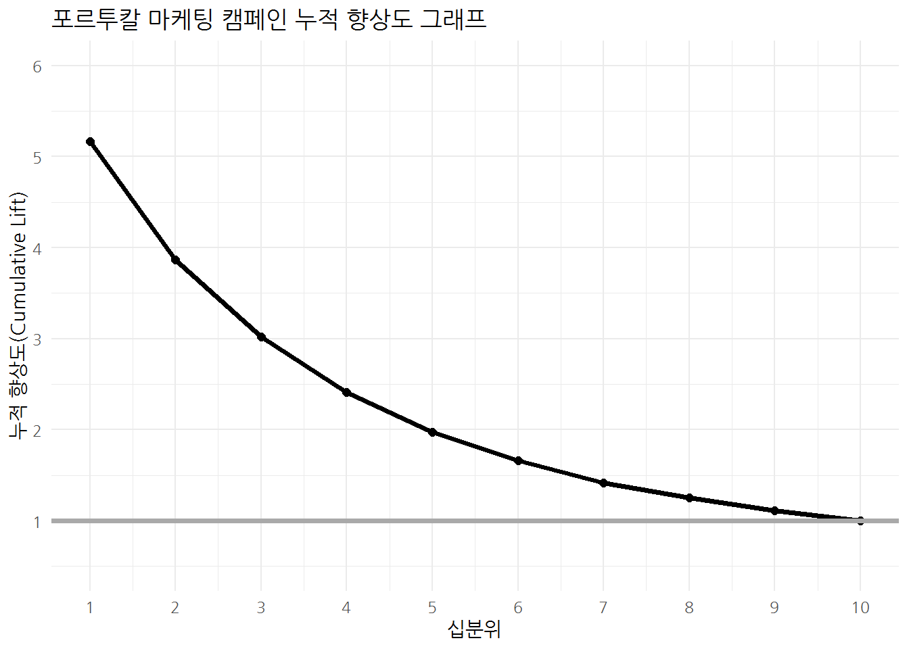
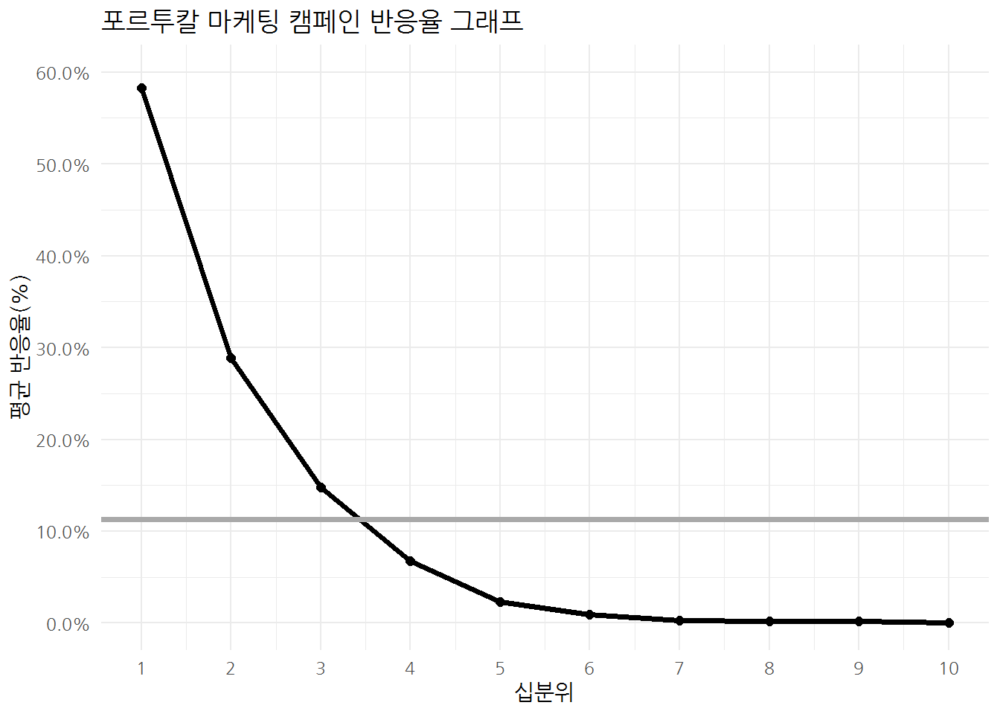
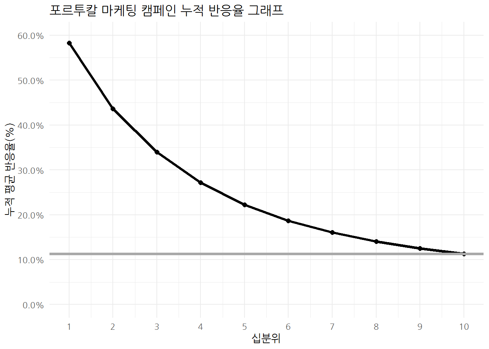

# 0. 환경설정 -----
library(tidyverse)
library(caret)
library(modelplotr) # devtools::install_github("modelplot/modelplotr")
# 1. 데이터 다운로드 -----
download.file(url = "https://archive.ics.uci.edu/ml/machine-learning-databases/00222/bank-additional.zip", destfile = "data//bank-additional.zip", mode='wb')
# 1.1. 압축풀기 -----
unzip("data/bank-additional.zip", exdir="./data")
# 1.2. 불러오기 -----
bank_dat <- read_delim("data/bank-additional/bank-additional-full.csv", delim=";",
col_types = cols(
.default = col_character(),
age = col_integer(),
duration = col_integer(),
campaign = col_integer(),
pdays = col_integer(),
previous = col_integer(),
emp.var.rate = col_double(),
cons.price.idx = col_double(),
cons.conf.idx = col_double(),
euribor3m = col_double(),
nr.employed = col_double()))
bank_df <- bank_dat %>%
select_('y','duration','campaign','pdays','previous','euribor3m')
bank_df <- bank_df %>%
mutate(y = factor(y, levels=c('no', 'yes')))
bank_df %>%
count(y) %>%
mutate(pcnt = scales::percent(n /sum(n)))6 예측모형 가치
예측모형을 잘 활용하여 사업적 효과를 내는 것은 AUC 값이 높은 성능 좋은 예측모형을 개발하는 것과 다른 문제가 된다. 예측모형개발이 수월해지고 사업에 활용이 많이 지면서 예측모형을 사업쪽에 설명하고 사업쪽의 의견을 반영하는 방법에 대한 연구와 활용이 빈번해지고 있다. 이를 위해서 먼저 예측모형을 의사결정나무 모형과 일반화 선형모형으로 예측모형을 개발하여 포르투갈 은행에서 개발된 상품에 가입을 하는지 예측하는 은행 마케팅 캠페인 데이터다. 1 2
6.1 데이터 준비
먼저 UCI 웹사이트에서 데이터를 다운로드 받아 압축을 풀고, 예측모형에 사용될 수 있도록 데이터를 가공한다. 약 11.3% 고객이 은행상품에 가입한 것이 파악된다.
6.2 예측모형
caret 팩키지를 통해서 예측모형을 개발한다. createDataPartition() 함수로 훈련/시험 데이터를 나누고, CV 방법을 통해서 최적의 모형을 개발하도록 doSNOW 팩키지로 멀티코어를 활용한 병렬처리를 가능하도록 해서 RPART, GLM, RF 모형에 따른 최적 모형을 개발한다.
# 2. 예측모형 -----
## 2.1. 훈련/시험 데이터 분할 ------
library(caret)
bank_index <- createDataPartition(bank_df$y, times =1, p=0.3, list=FALSE)
train_df <- bank_df[bank_index, ]
test_df <- bank_df[-bank_index, ]
## 2.2. 모형 개발/검증 데이터셋 준비 ------
cv_folds <- createMultiFolds(train_df$y, k = 10, times = 3)
cv_cntrl <- trainControl(method = "repeatedcv", number = 10,
repeats = 3, index = cv_folds)
## 2.2. 모형 개발/검증 데이터셋 준비 ------
library(doSNOW)
# 실행시간
start.time <- Sys.time()
cl <- makeCluster(4, type = "SOCK")
registerDoSNOW(cl)
bank_rpart <- train(y ~ ., data = train_df,
method = "rpart",
trControl = cv_cntrl,
tuneLength = 7)
bank_glm <- train(y ~ ., data = train_df,
method = "glm",
family = "binomial",
trControl = cv_cntrl,
tuneLength = 7)
bank_rf <- train(y ~ ., data = train_df,
method = "rf",
trControl = cv_cntrl,
tuneLength = 7,
importance = TRUE)
stopCluster(cl)
total.time <- Sys.time() - start.time
total.time
# bank_rpart_m <- bank_rpart$finalModel
# bank_glm_m <- bank_glm$finalModel7 예측모형 사업활용 3 4 5
예측모형을 사업에 활용하기 위해서 AUC, 민감도, 특이도와 같은 예측모형 성능파악 지표 대신에 다음과 같은 그래프와 측도를 많이 사용한다.
- 누적 이득 그래프(Cumulative gains plot): 예측모형을 적용해서 십분위 X까지 선택하게 되면, 실제 목표 라벨을 실제 몇 %까지 기대할 수 있는지에 대한 답을 제공한다.
- 누적 향상도 그래프(Cumulative Lift Chart): 예측모형을 적용해서 십분위수 X까지 누적 선택하게 되면, 예측모형을 전혀 사용하지 않을 때 대비하여 몇배나 더 효과가 있는지에 대한 대답을 제공한다.
- 반응 그래프(Response Plot): 예측모형을 적합시켜서 십분위수 X를 선택하게 되면, 해당 십분위수에서 기대되는 예상 반응율을 몇 %가 되는지에 대한 답을 제공한다.
- 누적 반응 그래프(Cumulative Response Plot): 예측모형을 적합시켜서 해당 십분위수 X까지 누적하여 선택하게 되면, 해당 십분위수에서 기대되는 예상 반응율을 몇 %가 되는지에 대한 답을 제공한다.
7.1 이득과 향상도 데이터
이득(gain), 향상도(lift) 계산을 위해서 먼저 예측모형에서 데이터를 준비한다. 필요한 데이터는 예측값(확률/스코어 점수)과 라벨이 된다.
bank_rpart_pred <- predict(bank_rpart, newdata=test_df, type="prob")[,2] %>% tbl_df
bank_glm_pred <- predict(bank_glm, newdata=test_df, type="prob")[,2] %>% tbl_df
bank_rf_pred <- predict(bank_rf, newdata=test_df, type="prob")[,2] %>% tbl_df
bank_pred_df <- data.frame(bank_glm_pred, bank_rpart_pred, bank_rf_pred, test_df$y) %>% tbl_df %>%
rename(prob_glm =value,
prob_rpart = `value.1`,
prob_rf = `value.2`,
y = `test_df.y`)
bank_pred_df %>%
sample_n(100) %>%
DT::datatable()7.2 이득과 향상도 계산
예측모형에서 이득과 향상도 계산을 위한 데이터가 준비되었다면 다음 단계로 이득(gain), 향상도(lift)를 계산하여 데이터프레임으로 준비한다.
7.2.1 caret 팩키지 - lift() 함수
caret 팩키지 lift() 함수를 통해 이득과 향상도를 계산할 수 있으나 총 표본 대비 비율로 나눠져서 사용시 주의가 요망된다.
lift_df <- caret::lift(y ~ prob_glm + prob_rf + prob_rpart, data=bank_pred_df, cuts=11, class="yes")
lift_df$data %>%
filter(liftModelVar == 'prob_rf') %>%
DT::datatable()
# ggplot(lift_df, value=10)7.2.2 gains 팩키지 - gains() 함수
gains 팩키지 gains() 함수를 통해 이득과 향상도를 계산할 수 있으나, 그 다음 후속 작업을 위해서 데이터프레임 변환작업을 수행하면 되는데 기본적으로 향상도와 이득에 대한 중요정보를 십분위수에 맞춰 모두 계산되어 있어 이를 참조값으로 사용한다.
library(gains)
gains_tbl <- gains(actual = as.integer(bank_pred_df$y)-1,
predicted = bank_pred_df$prob_glm,
groups=10)
gains_df <- tibble(
x = gains_tbl$depth,
obs = gains_tbl$obs,
cume.obs = gains_tbl$cume.obs,
mean.resp = gains_tbl$mean.resp,
cume.mean.resp = gains_tbl$cume.mean.resp,
cume.pct.of.total = gains_tbl$cume.pct.of.total,
lift = gains_tbl$lift,
cume.lift = gains_tbl$cume.lift,
mean.prediction = gains_tbl$mean.prediction,
min.prediction = gains_tbl$mean.prediction,
max.prediction = gains_tbl$max.prediction,
conf = gains_tbl$conf,
optimal = gains_tbl$optimal,
num.groups = gains_tbl$num.groups,
percents = gains_tbl$percents
) %>%
add_row(x=0, obs=0, cume.obs=0, mean.resp=0, cume.mean.resp=0, cume.pct.of.total=0, lift=0,
cume.lift=0, mean.prediction=0, min.prediction=0, max.prediction=0, conf="none",
optimal = "false",num.groups=10, percents="false") %>%
arrange(x)
DT::datatable(gains_df)
# gains_df %>%
# ggplot(aes(x=x, y=cume.pct.of.total)) +
# geom_line() +
# geom_point() +
# scale_y_continuous(limits=c(0,1)) +
# geom_abline(slope=1, intercept = 0)7.2.3 사용자 정의 함수
LISTEN DATA, “UNDERSTAND GAIN AND LIFT CHARTS”를 참조해서 직접 사용자 정의 함수를 작성해도 가능하다.
custom_lift <- function(label_var, prob_var, groups=10) {
tmp_df <- data.frame(cbind(label_var, prob_var))
tmp_df <- tmp_df %>%
mutate(decile = ntile(desc(prob_var), groups))
gain_table <- tmp_df %>%
group_by(decile) %>%
summarise_at(vars(label_var), funs(total = n(),
total_resp = sum(., na.rm = TRUE))) %>%
mutate(cum_resp = cumsum(total_resp),
gain = cum_resp / sum(total_resp) * 100,
cum_lift = gain / (decile*(100/groups)))
return(gain_table)
}
custom_lift_df <- custom_lift(as.integer(bank_pred_df$y)-1, bank_pred_df$prob_glm, 10)
DT::datatable(custom_lift_df)7.3 누적 이득 그래프
누적 이득 그래프(Cumulative gains plot)는 예측모형을 적용해서 십분위 X 까지 선택하게 되면, 실제 목표 라벨을 실제 몇 % 까지 예측/기대할 수 있는지에 대한 답을 제공한다.
RF가 최종 예측모형으로 선정되었다면 이를 활용하여 “누적 이득 그래프”로 시각화해보고 예측모형의 사업성과를 추정해보자.
library(extrafont)
loadfonts()
(gains_glm_tbl <- gains(actual = as.integer(bank_pred_df$y)-1,
predicted = bank_pred_df$prob_glm,
groups=10))
gains_glm_df <- tibble(
x = gains_glm_tbl$depth,
obs = gains_glm_tbl$obs,
cume.obs = gains_glm_tbl$cume.obs,
mean.resp = gains_glm_tbl$mean.resp,
cume.mean.resp = gains_glm_tbl$cume.mean.resp,
cume.pct.of.total = gains_glm_tbl$cume.pct.of.total,
lift = gains_glm_tbl$lift,
cume.lift = gains_glm_tbl$cume.lift,
mean.prediction = gains_glm_tbl$mean.prediction,
min.prediction = gains_glm_tbl$mean.prediction,
max.prediction = gains_glm_tbl$max.prediction,
conf = gains_glm_tbl$conf,
optimal = gains_glm_tbl$optimal,
num.groups = gains_glm_tbl$num.groups,
percents = gains_glm_tbl$percents
) %>%
add_row(x=0, obs=0, cume.obs=0, mean.resp=0, cume.mean.resp=0, cume.pct.of.total=0, lift=0,
cume.lift=0, mean.prediction=0, min.prediction=0, max.prediction=0, conf="none",
optimal = "false",num.groups=10, percents="false") %>%
arrange(x) %>%
mutate(decile = x / 10 %>% as.integer)
gains_glm_df %>%
ggplot(aes(x=decile, y=cume.pct.of.total)) +
geom_point(size=2) +
geom_line(size=1.3) +
geom_abline(slope=0.1, intercept = 0) +
scale_x_continuous(limits=c(0,10), breaks = seq(0,10,1)) +
scale_y_continuous(labels = scales::percent) +
theme_minimal() +
labs(x="십분위", y="누적 이득(Cumulative Gains)", title="포르투칼 마케팅 캠페인 누적 이득 그래프") 
7.4 향상 리프트(Lift) 그래프
누적 향상(리프트) 그래프(Cumulative lift plot)는 예측모형을 적용해서 십분위수 X까지 선택하게 되면, 예측모형을 전혀 사용하지 않을 때 대비하여 몇배나 더 효과가 있는지에 대한 대답을 제공한다.
gains_glm_df %>%
filter(x !=0) %>%
ggplot(aes(x=decile, y=cume.lift/100)) +
geom_point(size=2) +
geom_line(size=1.3) +
geom_hline(yintercept=1, size=1.3, color="darkgray") +
scale_x_continuous(limits=c(1,10), breaks = seq(0,10,1)) +
scale_y_continuous(limits=c(0.5,6), breaks = seq(0,6,1)) +
theme_minimal(base_family = "NanumGothic") +
labs(x="십분위", y="누적 향상도(Cumulative Lift)", title="포르투칼 마케팅 캠페인 누적 향상도 그래프") 
7.5 반응 그래프(Reponse Plot)
반응 그래프(Response Plot)는 예측모형을 적합시켜서 십분위수 X를 선택하게 되면, 해당 십분위수에서 기대되는 예상 반응율을 몇 %가 되는지에 대한 답을 제공한다.
avg_response_pcnt <- gains_glm_df$cume.mean.resp[11]
gains_glm_df %>%
filter(x !=0) %>%
ggplot(aes(x=decile, y=mean.resp)) +
geom_point(size=2) +
geom_line(size=1.3) +
geom_hline(yintercept=avg_response_pcnt, size=1.3, color="darkgray") +
scale_x_continuous(limits=c(1,10), breaks = seq(0,10,1)) +
scale_y_continuous(limits=c(0,0.6), breaks = seq(0,0.6,0.1), labels = scales::percent) +
theme_minimal(base_family = "NanumGothic") +
labs(x="십분위", y="평균 반응율(%)", title="포르투칼 마케팅 캠페인 반응율 그래프") 
7.6 누적 반응 그래프(Cumulative Reponse Plot)
누적 반응 그래프(Cumulative Response Plot)는 예측모형을 적합시켜서 해당 십분위수 X까지 누적하여 선택하게 되면, 해당 십분위수에서 기대되는 예상 반응율을 몇 %가 되는지에 대한 답을 제공한다.
gains_glm_df %>%
filter(x !=0) %>%
ggplot(aes(x=decile, y=cume.mean.resp)) +
geom_point(size=2) +
geom_line(size=1.3) +
geom_hline(yintercept=avg_response_pcnt, size=1.3, color="darkgray") +
scale_x_continuous(limits=c(1,10), breaks = seq(0,10,1)) +
scale_y_continuous(limits=c(0,0.6), breaks = seq(0,0.6,0.1), labels = scales::percent) +
theme_minimal(base_family = "NanumGothic") +
labs(x="십분위", y="누적 평균 반응율(%)", title="포르투칼 마케팅 캠페인 누적 반응율 그래프") 